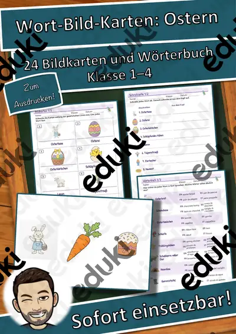

Aschermittwoch und Fastenzeit – vom Fasching bis Ostern – Lesespurgeschichte mit Rätselaufgaben (Klasse 6)
Aschermittwoch und Fastenzeit – vom Fasching bis Ostern – Lesespurgeschichte Religion / Ethik (Klasse 6)Schick deine Klasse auf eine Lesespur durch Kirche und Pfarrheim am Aschermittwoch! Mila und Jonas aus der 6b wollen wissen, warum nach dem Fasching 40 Tage Fastenzeit kommen – Religionslehrer Herr Brandl begleitet sie, Maskottchen ist die Sanduhr Rieselchen. Vom Pfarrsaal über Feuerschale, Sakristei, Altarraum, Seitenkapelle, Spendentisch und Gruppenraum bis zum Glockenturm führt der Weg. Am Ende jedes Abschnitts verrät ein Hinweis den nächsten Ort auf dem Plan – nur wer genau liest, findet den Weg und sammelt alle geheimen Buchstaben zum Lösungswort.
Die passende Lesespur für katholische und evangelische Religionslehre in Klasse 6 (auch 5 und 7), auch für Ethik – ideal zum Aschermittwoch und in der Fastenzeit, für Stationenlernen oder Vertretungsstunden. Fasten ohne Diät- und Körperthemen. Ohne Marken. Geeignet für Mittelschule, Realschule, Gymnasium und Gesamtschule. Das Material ist SOFORT EINSETZBAR und in DREI DIFFERENZIERUNGSSTUFEN (leicht ★ / mittel ★★ / schwer ★★★) angelegt.WICHTIG: Das komplette Material ist sowohl in FARBE als auch in SCHWARZ-WEISS enthalten – ideal zum Sparen von Druckkosten.DAS IST ENTHALTEN
- Lesespurgeschichte in 3 Niveaus (leicht, mittel, schwer)
- farbiger Plan von Kirche und Pfarrheim als Suchkarte
- Hörverstehen mit QR-Code zur MP3 (selbstständiges Hören mit Kopfhörern)
- vier Aufträge auf dem Weg: eine Zuordnung, eine Rechenaufgabe in der Sakristei, ein Quiz und ein Steckbrief
- Rätselseite (Wörter-Suchsel + Rätselfragen rund um die Fastenzeit)
- Ausmalbild zum Thema
- ausführliches Lösungsblatt für die Lehrkraft mit allen Lösungen (Lesespur, Aufträge, Hörverstehen, Rätselseite)
- alles zusätzlich als komplette Schwarz-Weiß-VarianteSO GEHT DIE LESESPURDie Schülerinnen und Schüler lesen ab START, finden im Text den nächsten Ort, suchen ihn auf dem Plan und lesen bei dieser Station weiter. An jeder richtigen Station gibt es einen Buchstaben. Eingeplante Sackgassen (Pfarrbüro, Parkplatz, Garderobe, Brunnen) sind keine Stationen und dienen der Selbstkontrolle. Am Ende werden die gesammelten Buchstaben umgestellt und ergeben ein geheimes Lösungswort. (Die Lösungen sind selbstverständlich nur im Lösungsblatt für die Lehrkraft enthalten.)INHALTLICHER SCHWERPUNKTDas Kirchenjahr, Aschermittwoch und das Aschenkreuz, die 40 Tage der Fastenzeit und Jesus in der Wüste, das Hungertuch, Verzichten, Beten und Teilen, Fastenaktionen, Fasten in anderen Religionen und Ostern als Fest der Auferstehung.ABGEDECKTER LEHRPLAN (Klasse 6)
- Religion – Das Kirchenjahr und seine Feste, Fastenzeit und Ostern (LehrplanPLUS Bayern Mittelschule Kath./Ev. Religionslehre 6).
- Mathematik – Rechnen mit Zeitspannen.
- Deutsch – Sachtexte sinnentnehmend lesen; einem Hörtext gezielt Informationen entnehmen (Hörverstehen mit MP3).Geeignet für Freiarbeit, Stationenlernen, Vertretungsstunden, Wochenplan und als Einstieg ins Thema.
Ähnliche Materialien

Aschermittwoch Lückentext mit Wortspeicher Hörverstehen und Suchsel

Karneval Lückentext mit Wortspeicher Hörverstehen und Suchsel

Ostergeschichte, Ostern, Karwoche, Religion

Ostern Lückentext mit Wortspeicher Hörverstehen und Suchsel

Wort-Bild-Karten: Ostern – Wort-Bild-Karten – Klasse 1–4

Fasching, Fastnacht und Karneval – Bräuche in der närrischen Zeit – Lesespurgeschichte mit Rätselaufgaben (Klasse 4)

Lesespaziergang: Verkleiden und Feiern im Fasching – 3-fach differenziert (★/★★/★★★), Klasse 2–4